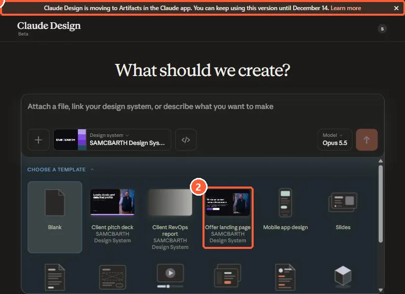
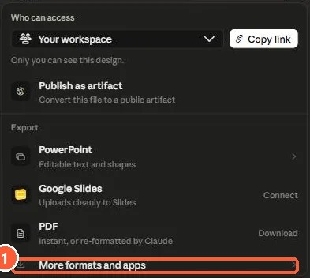
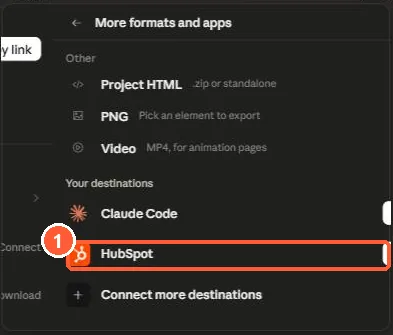
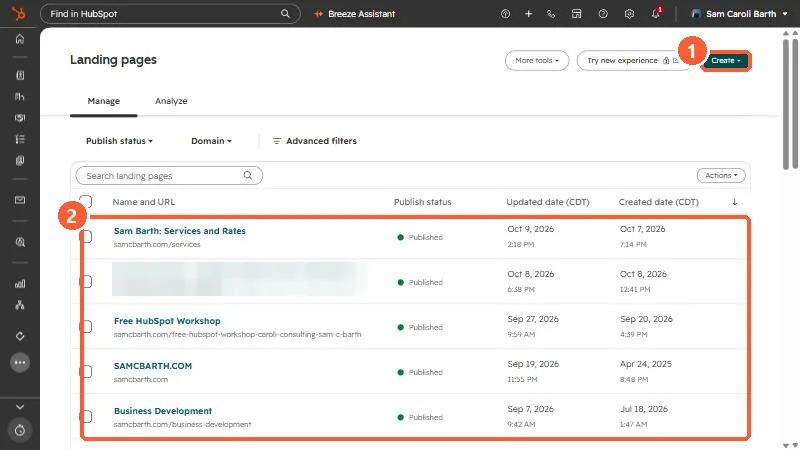
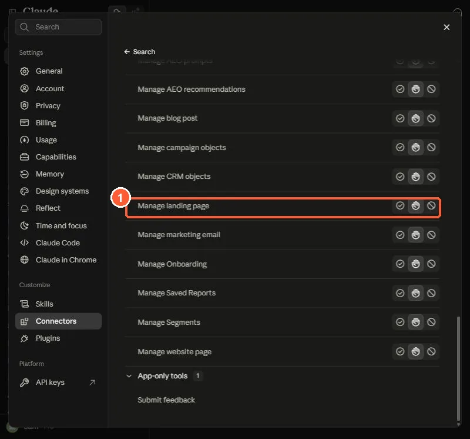

Short answer
Set up the HubSpot connector for Claude first. Then in Claude, click Design, build the page, click Share, choose More formats and apps, and click Send next to HubSpot. The page arrives in HubSpot as a draft. Landing pages are the only asset type this route supports. Updates go through the Send button too, not through chat, and sending again after you publish creates a new version instead of overwriting the published page. You can also ask the connector in a Claude chat to create or edit a landing page, and it asks you to confirm before creating from a template or publishing.
1. Set up the connector first
HubSpot's requirement for this route is that you have set up the HubSpot connector for Claude, and that you are on a Claude Pro, Max, Team or Enterprise plan. Follow use the HubSpot connector in Claude if you have not done that yet.
2. Route A: send a page from Claude Design
When I opened Claude Design, a banner said it is moving to Artifacts in the Claude app, and that I can keep using this version until December 14. HubSpot's page was written for Claude Design, so check whether the Send step has moved before you rely on these steps after that date.


- In Claude on desktop or claude.ai, click Design in the bottom left. In my browser, Claude Design lives at claude.ai/design.
- Create a landing page and make the changes you need.
- In the top right, click Share.
- Select More formats and apps.
- Next to HubSpot, click Send. If HubSpot is not listed, choose Connect more destinations to connect the HubSpot connector.
- The page is sent to HubSpot as a draft. Review it in HubSpot and publish when ready.
The Share menu in my Claude Design offers access settings, Publish as artifact, exports to PowerPoint, Google Slides and PDF, and More formats and apps.


Open More formats and apps. HubSpot appears under Your destinations next to Claude Code, with a button to send it, plus Connect more destinations.


I stopped here and did not press Send. My HubSpot connector is attached to my live portal, and I did not want a test page landing in it. The menu lists HubSpot as a destination because the connector is set up.
You can keep editing in Claude Design after sending. Click Send again to update the landing page in HubSpot. HubSpot is explicit about two limits. Landing pages are the only supported asset type. And asking Claude in chat to update the page will not push changes to HubSpot, only the Send button does.
If the page is already published in HubSpot, sending it again from Claude Design creates a new version in HubSpot instead of overwriting the published version. Check which version is live before you publish.
3. Find the draft in HubSpot
Open Content > Landing pages. The page you sent shows up with the other landing pages, with its publish status. Open it, check the layout, forms and links on a preview, then publish when you are happy with it.


This is my landing pages list. Each row shows the name, URL, publish status and dates. A sent page would appear here with a draft status instead of published, and I would open it from this list to review it.
4. Route B: build or edit through the connector in chat
The HubSpot connector can also work on landing pages from a normal Claude chat. HubSpot lists landing pages as read, create and update objects for the connector. The developer docs describe the underlying landing page tool as able to create, edit, style, publish, clone and inspect landing pages, including reading module types and templates and writing content, styles and metadata. Writes happen one after another.
- It asks first. The docs say the tool requires user confirmation before creating a page from a template, publishing, or restoring a revision.
- It uses your templates. It reads the templates and module types available in your account, so a page can only be as flexible as the template behind it. If a template does not allow modules, see template doesn't allow modules.
- Review everything. Keep Write tools on Needs Approval in Claude, as HubSpot recommends.


In my Claude, Manage landing page is one of the write tools, and the write group is set to Needs approval. So Claude has to ask me before it changes a page.
For performance questions, HubSpot notes that only published pages have data, and you must name the campaign and date range for individual pages.
5. Which route to use
- Claude Design: you want to design a page visually, then hand a draft to HubSpot.
- Connector in chat: you want Claude to work with pages and templates that already exist in your account, or to adjust content and metadata.
Whichever route you use, treat the result as a draft. Check the form, the tracking and the meta description in HubSpot before you publish.